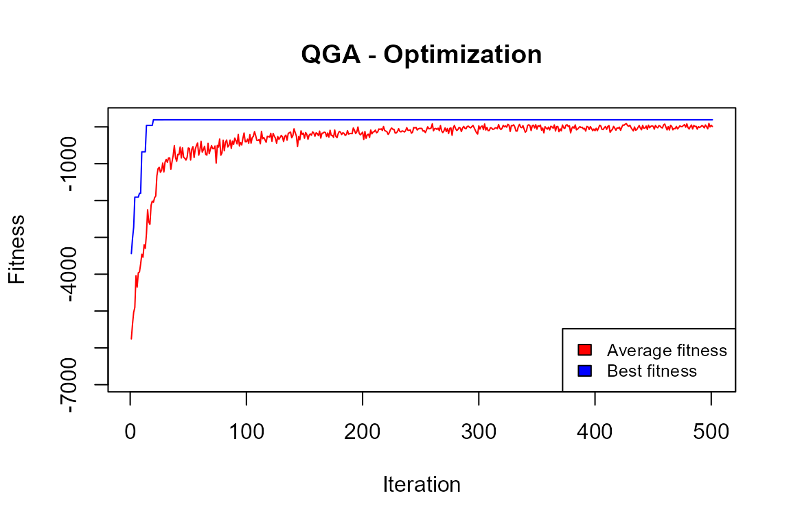
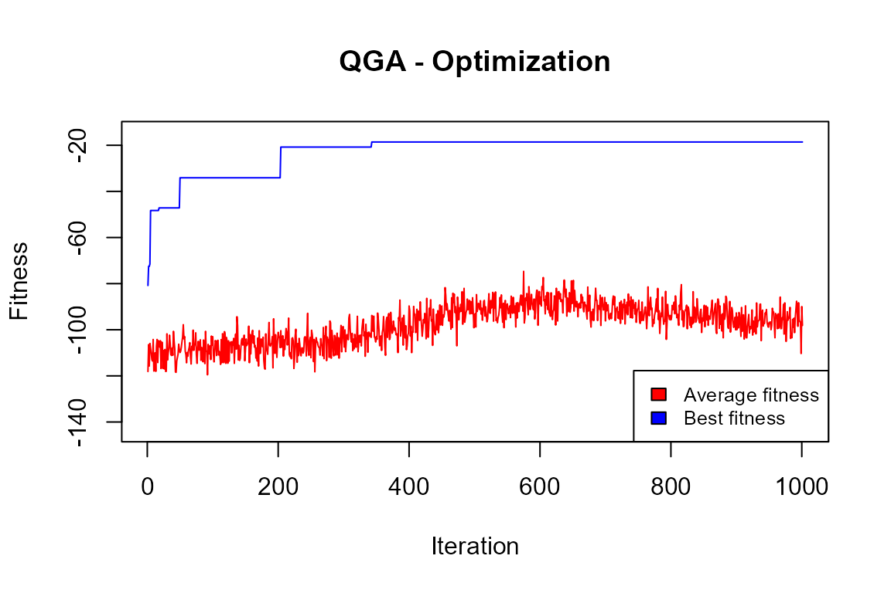
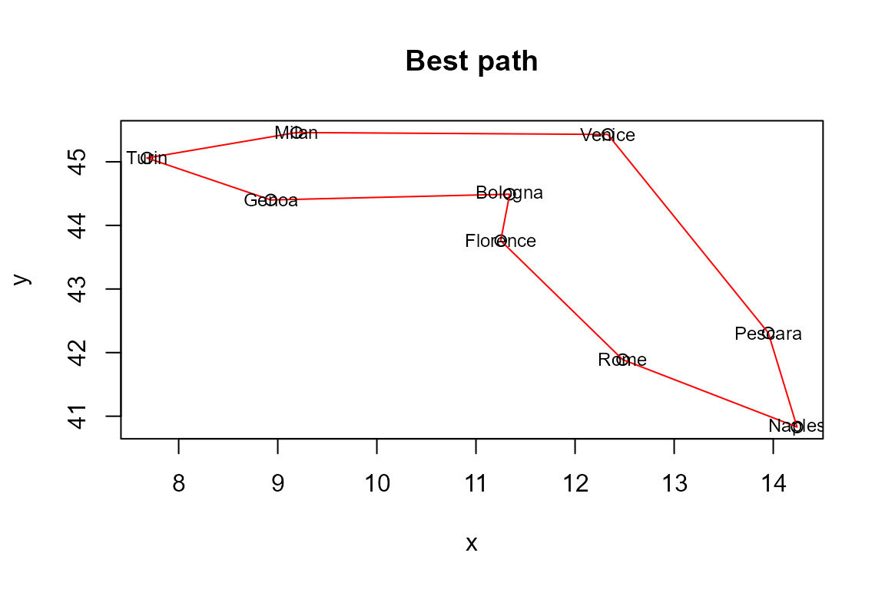
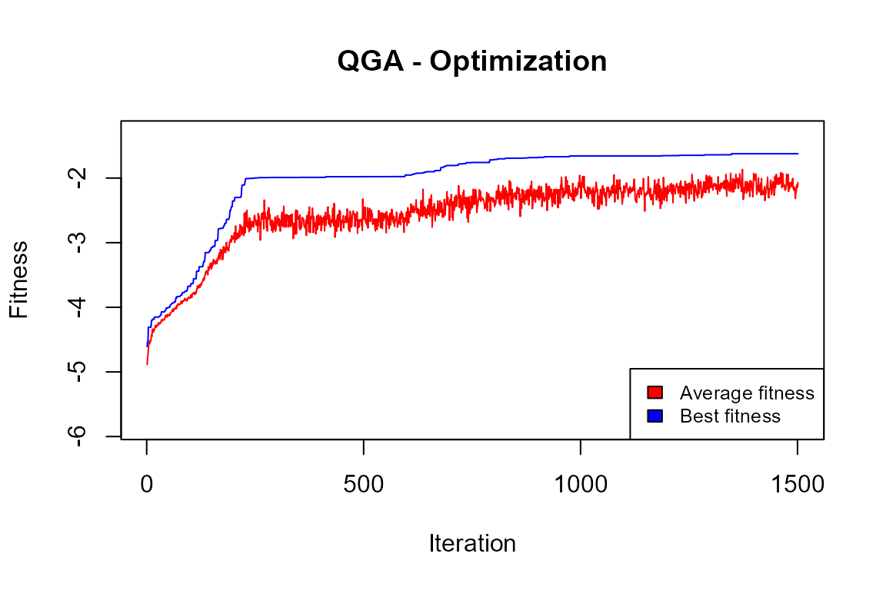

Introduction
This package implements the Quantum Genetic Algorithm that was first proposed by Han and Kim (2000). A complete illustration of the class of quantum genetic algorithms is in Zhang (2011). Other useful reviews are contained in Nowotniak (2010) and in by Lahoz-Beltra (2016).
This R implementation takes ideas from the Python implementation by Lahoz-Beltra (2008).
In this package, each optimization problem is represented as a maximization one, where each solution is a sequence of (qu)bits. Following the quantum paradigm, these qubits are in a superposition state: when measuring them, they collapse in a 0 or 1 state. After measurement, the fitness of the solution is calculated as in usual genetic algorithms.
The evolution at each iteration is oriented by the application of two quantum gates to the amplitudes of the qubits:
- a rotation gate (always);
- a Pauli-X gate (optionally).
The rotation is based on the theta angle values: higher values allow a quicker evolution, and lower values avoid local maxima.
The Pauli-X gate is equivalent to the classical mutation operator and determines the swap between alfa and beta amplitudes of a given qubit.
The package has been developed in such a way as to permit a complete separation between the “engine”, and the particular problem subject to combinatorial optimization.
In the following, the implementation of three specific problems will be presented, namely:
- knapsack;
- travelling salesman;
- clustering.
Knapsack
“The knapsack problem is the following problem in combinatorial optimization: given a set of items, each with a weight and a value, determine which items to include in the collection so that the total weight is less than or equal to a given limit and the total value is as large as possible. It derives its name from the problem faced by someone who is constrained by a fixed-size knapsack and must fill it with the most valuable items.” (from Wikipedia).
Fitness evaluation
The following fitness evaluation function is defined:
KnapsackProblem <- function(solution,eval_func_inputs) {
solution <- solution - 1
items <- eval_func_inputs[[1]]
maxweight <- eval_func_inputs[[2]]
# Fitness
tot_items <- sum(solution)
# Penalization
if (sum(items$weight[solution]) > maxweight) {
tot_items <- tot_items - (sum(items$weight[solution]) - maxweight)
}
return(tot_items)
}This function receives as input parameters:
- solution (the current solution to be evaluated)
- eval_func_inputs (a list containing all which needed in the evaluation process)
Prepare data
items <- as.data.frame(list(Item = paste0("item",c(1:500)),
weight = rep(NA,500)))
set.seed(1234)
items$weight <- rnorm(500,mean=200,sd=80)
head(items)
#> Item weight
#> 1 item1 103.43474
#> 2 item2 222.19434
#> 3 item3 286.75529
#> 4 item4 12.34418
#> 5 item5 234.32998
#> 6 item6 240.48447
sum(items$weight)
#> [1] 100073.6
maxweight = sum(items$weight) / 5
maxweight
#> [1] 20014.71So, we have generated a set of 500 items, each with a given weight drawn from a normal distribution, with a mean equal to 200 and a standard deviation equal to 80. Then, we have set the maximum permissible sum of weights equal to one-fifth of the total sum of weights.
Optimization
We define the Genome parameter as the number of items, and the number of values equal to 2. Each solution is a vector of 300 elements, each with an assigned value of 1 (not included in the knapsack) or 2 (included in the knapsack).
popsize = 20
generation_max = 500
nvalues_sol = 2
Genome = nrow(items)
thetainit = 3.1415926535 * 0.05
thetaend = 3.1415926535 * 0.025
pop_mutation_rate_init = 1/(popsize + 1)
pop_mutation_rate_end = 1/(popsize + 1)
mutation_rate_init = 1/(Genome+1)
mutation_rate_end = 2/(Genome+1)
mutation_flag = TRUE
plotting = FALSE
verbose = FALSE
progress = FALSE
eval_fitness = KnapsackProblem
eval_func_inputs = list(items,maxweight)Moreover, we want to iterate 500 times, each time considering 20 generated solutions. At the beginning, the rotation rate will be ‘3.1415926535 * 0.1’, while at the end it will be the half (to be more sensitive to slight variations). The opposite for the mutation rate.
Analysis of the solution
The output of the QGA function is a list with two elements:
- the vector of the solution (in our case indicating which items will be included in the knapsack)
- the “history” of the optimization, i.e. the trend of the mean and best fitness values.
In our case:
QGA:::plot_Output(knapsackSolution [[2]])
The plot indicates that the number of iterations was enough to obtain a solution that is likely to be no further improved.
best <- knapsackSolution[[1]] - 1
sum(best)
#> [1] 193That is, 193 items out of 500 have been included in the knapsack.
sum(items$weight[best])
#> [1] 19962.9
maxweight
#> [1] 20014.71The sum of the weights of included items is very close to the constrained maximum weight.
Travelling salesman
“The travelling salesperson problem, also known as travelling salesman problem, asks the following question:”Given a list of cities and the distances between each pair of cities, what is the shortest possible route that visits each city exactly once and returns to the origin city?” It is an NP-hard problem in combinatorial optimization, important in theoretical computer science and operations research.” (from Wikipedia).
Fitness evaluation
The following fitness evaluation function is defined:
TravellingSalesman <- function(solution,distance) {
l = 0.0
for (i in 2:length(solution)) {
l = l+distance[solution[i-1], solution[i]]
}
# Fitness function
l = l + distance[solution[1],solution[length(solution)]]
# Penalization
penal <- ((nrow(distance)) - length(table(solution)))*sum(distance)/10
cost <- -(penal+l)
return(cost)
}This function receives as input parameters:
- solution (the current solution to be evaluated)
- distance (the matrix of distances between the cities to be visited)
Prepare data
An external file with a list of cities (names and coordinates) is read, and a number of them is selected (here, only 9):
cities <- read.csv("cities.csv")
ncities <- 9
cities <- cities[c(1:ncities),]
cities
#> city x y
#> 1 Turin 7.68 45.06
#> 2 Milan 9.19 45.46
#> 3 Genoa 8.93 44.40
#> 4 Venice 12.33 45.43
#> 5 Bologna 11.34 44.49
#> 6 Florence 11.25 43.76
#> 7 Pescara 13.95 42.31
#> 8 Rome 12.48 41.89
#> 9 Naples 14.24 40.83
distance <- as.matrix(dist(cities[,c(2:3)]))
distance
#> 1 2 3 4 5 6 7 8 9
#> 1 0.000000 1.562082 1.413542 4.664697 3.704119 3.799329 6.846561 5.752295 7.805543
#> 2 1.562082 0.000000 1.091421 3.140143 2.358686 2.670880 5.707898 4.854791 6.851233
#> 3 1.413542 1.091421 0.000000 3.552591 2.411680 2.406657 5.437693 4.347712 6.398515
#> 4 4.664697 3.140143 3.552591 0.000000 1.365174 1.988794 3.515508 3.543177 4.980773
#> 5 3.704119 2.358686 2.411680 1.365174 0.000000 0.735527 3.400662 2.838943 4.669647
#> 6 3.799329 2.670880 2.406657 1.988794 0.735527 0.000000 3.064719 2.238258 4.186287
#> 7 6.846561 5.707898 5.437693 3.515508 3.400662 3.064719 0.000000 1.528823 1.508145
#> 8 5.752295 4.854791 4.347712 3.543177 2.838943 2.238258 1.528823 0.000000 2.054556
#> 9 7.805543 6.851233 6.398515 4.980773 4.669647 4.186287 1.508145 2.054556 0.000000Here, the distances have been calculated simply as Euclidean distances: clearly, in more realistic cases they should be calculated based on a road map.
Optimization
We define the Genome parameter as the number of cities; also the number of values is set equal to the number of cities. This means that each solution is a vector of 9 elements, each one with an assigned value from 1 to 9: each couple element/value indicates from which origin city (element) the travelling salesman should go to which destination city (value). In this setting, we do not want to introduce the mutation operator. Moreover, we want to iterate 1000 times, each time considering 20 generated solutions.
popsize = 20
Genome = nrow(cities)
nvalues_sol = nrow(cities)
set.seed(4321)
TSPsolution <- QGA(popsize,
generation_max = 1000,
nvalues_sol,
Genome,
thetainit = 3.1415926535 * 0.01,
thetaend = 3.1415926535 * 0.01,
# pop_mutation_rate_init = 1/(popsize + 1),
# pop_mutation_rate_end = 1/(popsize + 1),
# mutation_rate_init = 1/(Genome + 1),
# mutation_rate_end = 1/(Genome + 1),
mutation_flag = FALSE,
plotting = FALSE,
verbose = FALSE,
progress = FALSE,
eval_fitness = TravellingSalesman,
eval_func_inputs = distance)Analysis of the solution
QGA:::plot_Output(TSPsolution[[2]])
The plot indicates that the number of iterations was enough to obtain a solution that is likely to be no further improved.
solution <- TSPsolution[[1]]
cities$city[solution]
#> [1] "Milan" "Venice" "Pescara" "Naples" "Rome" "Florence" "Bologna" "Genoa" "Turin"
cities_tsp <- cities[solution,]
plot(y~x,data=cities_tsp)
polygon(cities_tsp$x,cities_tsp$y,border="red")
text(x = cities_tsp$x, y = cities_tsp$y, labels = cities_tsp$city, cex=.75)
title("Best path")
This seems to be a reasonable solution. It has to be noted that, with a higher number of cities, acceptable solutions must be searched increasing the number of iterations and fine-tuning the parameters.
Clustering
“Cluster analysis or clustering is the task of grouping a set of objects in such a way that objects in the same group (called a cluster) are more similar (in some specific sense defined by the analyst) to each other than to those in other groups (clusters).” (from Wikipedia). In our study, we consider the multivariate case, where clustering is done considering more than one variable.
Fitness evaluation
The following fitness evaluation function is defined:
clustering <- function(solution, eval_func_inputs) {
maxvalue <- 5
penalfactor <- 2
df <- eval_func_inputs[[1]]
vars <- eval_func_inputs[[2]]
# Fitness function
fitness <- 0
for (v in vars) {
cv <- tapply(df[,v],solution,FUN=sd) / tapply(df[,v],solution,FUN=mean)
cv <- ifelse(is.na(cv),maxvalue,cv)
fitness <- fitness + sum(cv)
}
# Penalization on unbalanced clusters
b <- table(solution)/nrow(df)
fitness <- fitness + penalfactor * (sum(abs(b - c(rep(1/(length(b)),length(b))))))
return(-fitness)
}This function receives as input parameters:
- solution (the current solution to be evaluated)
- eval_func_inputs (a list including the dataframe to be analyzed, and the set of variables to be considered in the clustering)
Prepare data
We make use of the “iris” dataset:
data(iris)
vars <- colnames(iris)[1:4]
vars
#> [1] "Sepal.Length" "Sepal.Width" "Petal.Length" "Petal.Width"The above four variables will be used in clustering.
Optimization
We define the Genome parameter as the number of entries in the “iris” dataset. The number of values is set equal to the 3. This means that each solution is a vector of 150 elements, each one with an assigned value from 1 to 3: each couple element/value indicates which entry (element) is assigned to which cluster (value).
nclust = 3
popsize = 20
Genome = nrow(iris)
set.seed(1234)
solutionQGA <- QGA(popsize,
generation_max = 1500,
nvalues_sol = nclust,
Genome,
thetainit = 3.1415926535 * 0.1,
thetaend = 3.1415926535 * 0.05,
pop_mutation_rate_init = 1/(popsize + 1),
pop_mutation_rate_end = 1/(popsize + 1),
mutation_rate_init = 1/(Genome + 1),
mutation_rate_end = 1/(Genome + 1),
mutation_flag = TRUE,
plotting = FALSE,
verbose = FALSE,
progress = FALSE,
eval_fitness = clustering,
eval_func_inputs = list(iris, vars))Analysis of the solution
QGA:::plot_Output(CLUSTsolution[[2]])
The plot indicates that the number of iterations was enough to obtain a solution that is likely to be no further improved.
solution <- CLUSTsolution[[1]]
table(solution)
#> solution
#> 1 2 3
#> 50 50 50We have 3 perfectly balanced clusters.
We can try to understand the quality of these clusters by comparing them to the “Species” variable in the dataset:
iris$cluster <- solution
xtabs( ~ Species + cluster, data=iris)
#> cluster
#> Species 1 2 3
#> setosa 0 0 50
#> versicolor 45 5 0
#> virginica 5 45 0It seems that the cluster values can predict quite well the Species of the iris flowers, with only 10 misclassifications out of 150.